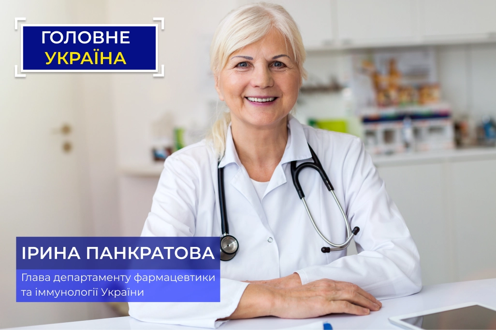

головне
Україна
кожну
суботу
о 20:00
"Пенсіонери - відпрацьований матеріал, нехай мруть, їх не шкода. Якщо не
тиск у серці, то щось інше їх вб’є.
Немає сенсу витрачати кошти на
старих!"
© Зам. гол. фармацевта України
Опублiковано:
Декілька днів тому в соціальних мережах широко розлетівся скріншот скандального повідомлення Людмили Говорової, замісниці головного фармацевста України. Після розголосу, вона видалила свій аккаунт у Фейсбук. Але в нас залишився скріншот її запису, який ми вам демонструємо.
Учора стало відомо, що Людмила Говорова і все керівництво департаменту фармацевтики звільнені і там проходить перевірка. Щоб зрозуміти суть, що відбувається, ми задали декілька питань голові департаменту фармацевтики України, представнику препарату та главі Научно-дослідницького інституту кардіології і внутрішніх захворювань України.
Максим Кротов: Як така людина може працювати в державних установах? За
чий рахунок вона купила собі котедж в Конча-Заспі і регулярно відпочиває
на курортах?
Чому такі люди вирішують долю унікального препарату від НДІ кардіології
та внутрішніх захворювань України, який лікує серце і тиск, запобігаючи
смерті? І який повинні видавати безкоштовно,
недивлячісь на ціну в 3500 грн.
Сьогодні ми про все це дізнаємось!
Максим Кротов: "Перше питання до Ірини Панкратової - глави департаменту фармацевтики та іммунології України. Як людина такого роду опинилась на такіх високій посаді?"

Ірина Панкратова: Щоб ви розуміли мою ситуацію, я призначена на
посаду голови департаменту буквально три дні тому. Вся стара верхівка
була звільнена, включаючи жінку про яку йде мова. Так що, на даний
момент часу вона вже не знаходиться на державній службі і не має ніякого
відношення до медицини в Україні.
Причиною масового звільнення, як ви самі розумієте, стали підозри в
корупції. Моє завдання провести ревізію всіх прийнятих рішень. Вже зараз
я можу сказати, що цілу групу рішень старого керівництва потрібно
переглянути.
Максим Кротов: "Тобто звільнили не тільки її,але і все керівництво в цілому? Які рішення Ви маєте на увазі? Можете навести приклад?"
Ірина Панкратова: Так, звільнили все старе керівництво
Департаменту в повному складі. Як приклад можна привести питання, яке
піднімається в наведеному вами скріншоті. Там вони обговорюють
безкоштовне поширення нового препарату від НДІ кардіології та внутрішніх
захворювань, яке передбачалося запустити всередині країни. При цьому
заборонивши його відправку на експорт.
Але старе керівництво прийняло прямо протилежне рішення. Вони
заблокували ідею про його безкоштовну видачу населенню і вважали за
краще продаж за кордон. Навіть встигли підписати контракт з Францією на
поставки препарату. За ціною в 10 тисяч грн за упаковку. Це при тому, що
у них навіть не було такого права, так як права на ліки належать НДІ
кардіології та внутрішніх захворювань України.
Максим Кротов: "Нічого собі ціна. 10 тисяч гривень за упаковку. Чому так дорого? І як його збиралися видавати безкоштовно, адже бюджет же просто не потягне такі витрати?"
Ірина Панкратова: 10 тисяч, це та вартість, яку вони виставили
французам, а ті погодилися. Тут Говорова була права, за кордоном дійсно
готові платити практично будь-які гроші.
Причина проста-це єдині в усьому світі ліки, які здатні
повністю вилікувати серцево-судинну систему людини, повернувши її в
здоровий стан. Ви самі напевно знаєте, що хвороби серця - причина 2/3
смертей у світі. Препарат же повністю позбавляє людину від них. Без
хірургічного втручання і ризику смерті на операційному столі. Звісно всі
рвуться його отримати.
Собівартість препарату у виробництві, наскільки я знаю,
становить 1500 грн. Саме цю суму планувалося компенсувати з бюджету НДІ
кардіології та внутрішніх хвороб. А самі ліки видавати людям
безкоштовно.
Максим Кротов: "Питання до Дмитра Неділько - що такого в цьому препараті, що за кордоном його готові купувати за такою ціною? 10 тисяч гривень за упаковку, це ж шалено дорого."
Дмитро Неділько: Ці ліки над яким більше десяти років працювала команда НДІ кардіології та внутрішніх хвороб. На виході вийшов унікальний препарат, який здатний повністю оздоровити серцево-судинну систему людини. Грубо кажучи, повернути її в первісний стан. Навіть якщо у людини присутні важкі хвороби серця і судин. Зупинка серця, інсульт та інфаркт - причини 2/3 смертей у всьому світі. Препарат дозволяє запобігти всі три патології і запобігти ранню смерть людини. Звідси і такий божевільний попит.
Максим Кротов: "А що саме він робить?"
Дмитро Неділько: Це комплексні ліки, які діють на всю
серцево-судинну систему разом, одночасно вирішуючи кілька завдань:
•Повністю очищає судини від забруднення, і розчиняє тромби.
Холестерин, жирові нашарування, пробки з тромбів - все це йде в минуле.
Що важливо очищається, в тому числі ішемічна артерія, що знижує до нуля
ризик інфаркту міокарда.
•Запускає процес регенерації серцевого м'яза. Відбувається
відновлення пошкоджених областей, приходять в норму серцеві клапани,
зазвичай сильно страждають через гіпертонію.
•Відновлює пошкоджені стінки судин і зміцнює їх. Запобігається
ризик розриву судин і крововиливу в мозок. В цілому судини стають
повністю здоровими і еластичними, як в молодості.
Як результат, відбувається повне відновлення серцево-судинної системи
людини. А вона сама повертається в абсолютно здоровий стан. Як
підтвердили багатоступінчасті клінічні випробування, ліки допомагають
навіть в разі вкрай важкого стану пацієнта. Якщо у вас одночасно
присутня ішемічна хвороба серця, скаче тиск, аритмія і тахікардія -
препарат все одно допоможе. Важливий момент-повністю забирається і
гіпертонія, тобто підвищений тиск. Яке є першопричиною всіх захворювань
серця і судин.
Максим Кротов: "Можете тут перерватися? Підвищений тиск-це ж буденність для більшості людей. А ви говорите, що воно є причиною хвороб серця і судин. Поясніть?"
Дмитро Неділько: Ось тому, причиною майже 70% смертей є
захворювання серця і судин. Тому що кожен думає, що підвищений тиск це
нормально.
При цьому саме через підвищений тиск починають розвиватися найсерйозніші
хвороби серцево-судинної системи. Причиною більшості смертей є інфаркт
або інсульт - це вина підвищенного тиску.
За статистикою,
ризик летального результату більшості хвороб, збільшується в 4 рази у
людей з хронічними захворюваннями серцево-судинної системи. У зв'язку з
цим, пенсіонери з підвищеним тиском знаходяться в групі ризику.
Максим Кротов: "Чим підвищенний тиск настільки небезпечний?"
Дмитро Неділько: Якщо викладати зовсім коротко, то тиск починає
підвищуватися через застій крові в малих артеріях. Організму потрібно
проштовхнути кров з потрібною швидкістю далі і він таким чином
забезпечує необхідну.
Через стрибки тиску починають отримувати пошкодження стінки великих
артерій. На місцях пошкоджень починає осідати холестерин і інші жирові
бляшки. З'являється атеросклероз.
Момент №1-це призводить до ішемічної хвороби серця. Момент №
2-інтенсивність стрибків тиску у людини підвищується. Що в свою чергу
призводить ще до більшого забруднення судин.
Одночасно зростає навантаження на серце, яке зношується в кілька разів
швидше, ніж повинно. Починаються проблеми з серцевими клапанами,
з'являються аритмія і тахікардія. Через часті підвищення тиску зростає
ризик розриву судин і інсульту. У людини з'являється відразу цілий набір
смертельних захворювань, який спочатку обумовлений одним лише підвищеним
тиском. Він може померти в будь-який момент.
Максим Кротов: "Питання представнику Avocardine, Сергію Череді. Чому ви відмовились від препарату Avocardine?"
Сергій Череда: Вони пропонували не бізнес-партнерство, а якийсь соціалізм. Продавати препарат з максимальною націнкою в 10%, за фіксованою вартістю. Та ще й хотіли поступово знижувати на нього закупівельну вартість за рахунок залучення медичних фондів або держфінансування. Куди це годиться? Перепрошую, звичайно, але у нас приватний бізнес. І якщо пропозиція комерційно не вигідна, то ми маємо повне право її відхилити.
Дмитро Неділько: У вас не просто приватний бізнес. Від нього залежить життя людей. Адже саме вони купують у вас ліки. Ви ж продаєте свідомо неефективні препарати, відмовляючись від продажу всього, що може завдати шкоди вашому прибутку. Я особисто був присутній на переговорах і чув, як Ваші співробітники говорили, що наш «Avocardine» обрушить продаж всіх ліків для серця і від гіпертонії, на які припадає дві третини вашого прибутку. Це бридко і жахливо-робити гроші на життя людей!
Максим Кротов: "Сергій, можете якось прокоментувати це?"
Сергій Череда: Не впевнений, що варто відповідати. Можу тільки сказати, що всі препарати які продаються у нас пройшли сертифікацію в Україні. Якщо якісь з них заборонять, то ми відразу ж знімемо їх з продажу. Все робиться строго відповідно до законодавства. Що стосується "Avocardine" від НДІ кардіології та внутрішніх захворювань, то як я вже сказав, у нас приватний бізнес. І нас не можна змусити продавати щось проти нашої волі.
Дмитро Неділько: поки такі люди, як Говорова працювали в Департаменті фармацевтики, я уявляю, яким чином там проходили процедуру сертифікації нових ліків. Сподіваюся нове керівництво займеться, в тому числі і перевіркою присутніх препаратів.
Максим Кротов: "виходить" Avocardine " поки так і лежить на складі?"
Ірина Панкратова: На щастя ні. Зараз ми вже перейшли від вирішення адміністративних проблем минулої команди до нормальної роботи. І ми спільно з НДІ кардіології та внутрішніх захворювань налагодили пряме поширення «Avocardine».
Більш того, ми досягли угоди про фінансування його виробництва, як вони спочатку і пропонували. НДІ кардіології та внутрішніх захворювань, не є комерційною структурою. Це науково-медичний заклад, підпорядкований державі. Тому мети заробити грошей у нього немає. Навпаки, вони витрачають гроші з бюджету на виробництво препарату. Зараз для НДІ кардіології та внутрішніх захворювань виділили субвенції під ці ж цілі. Як результат « "Avocardine" поширюється фактично безкоштовно.
Максим Кротов: "Як люди можуть його отримати? Де? Чому ви не почали відправляти його до лікарень?"
Ірина Панкратова: В лікарні не стали відправляти через острах банального злодійства. На скріншоті, який ви приводили на самому початку, один з коментаторів по суті пропонує красти і продавати «Avocardine» за кордон. Більш того, пропонує іншим скооперуватися. Відправивши його в лікарні, ми випустимо ситуацію з-під контролю. І як показує мій досвід, швидше за все наш препарат стануть видавати тільки тим, хто зможе добре заплатити в кишеню лікаря.
Тому видача проходить під суворим контролем з боку НДІ кардіології та внутрішніх захворювань. Додатково кожна відправка ліків контролюється. Щоб отримати «Avocardine» досить залишити заявку зі своїм ім'ям і номером телефону. Для зручності ми розмістимо форму трохи нижче.
Максим Кротов :"Я правильно зрозумів - будь-хто може отримати препарат безкоштовно і вилікувати їм своє хворе серце, який в свою чергу коштує 3500 гривень?"
Ірина Панкратова: Так, кожен громадянин може залишити заявку на «Avocardine» і отримати його на пробу БЕЗКОШТОВНО, при його повній вартості в 3500 грн за упаковку.
Одне " але " - це досягається за рахунок субвенцій та фінансів НДІ кардіології та внутрішніх захворювань. Поки фінансування вистачить на партію в 5500 упаковок препарату. Наступна партія буде забезпечена виключно фінансуванням НДІ кардіології і внутрішніх захворювань, але ціна там буде набагато вище. Орієнтовна вартість наступної партії складе близько 4500-5000 тисяч гривень.
Максим Кротов: "Але поки люди все ще можуть отримати його безкоштовно?"
Ірина Панкратова: Зараз від першої партії залишилося близько 1500 упаковок. Попит зростає в геометричній прогресії. Якщо в перший день у нас розібрали всього сотню упаковок, то вже на третій більше тисячі. Тому як довго ліки буде доступно безкоштовно сказати дуже складно. Швидше за все 1-2 дня. Далі потрібно буде очікувати додаткового фінансування.
Спеціально для наших читачів ми розміщуємо форму замовлення на препарат за квотою безпосередньо від виробника.
Важливо! На поточний момент часу, у НДІ кардіології та внутрішніх захворювань залишилося тільки 44 упаковки препарату з першої партії, профінансованої за квотою.
Офіційний бланк заявки
№29 957 з 30 000 від 21.11.2022р.
На безплатне одержання "Кардісена" за спеціальною програмою
Щоб отримати «Кардісен» вкажіть ваше Ім'я та контактний Телефон у поля нижче та натисніть на кнопку «Отримати безоплатно.
∗Конфіденційно. Ваші дані надсилаються безпосередньо виробнику. Ніхто, крім нього, немає доступу до даних